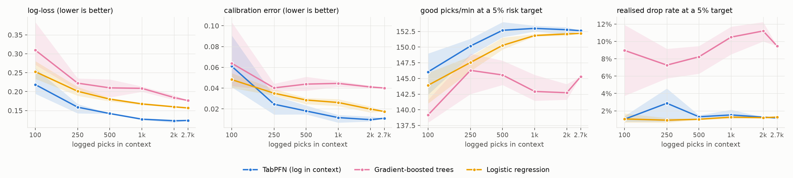
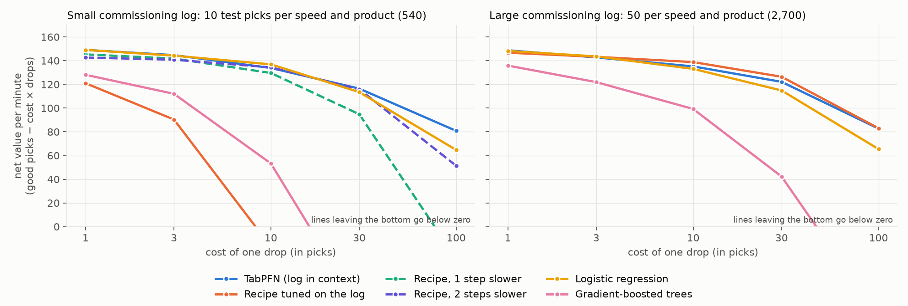
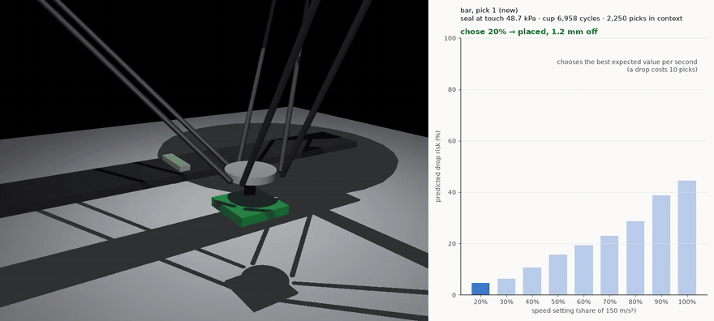
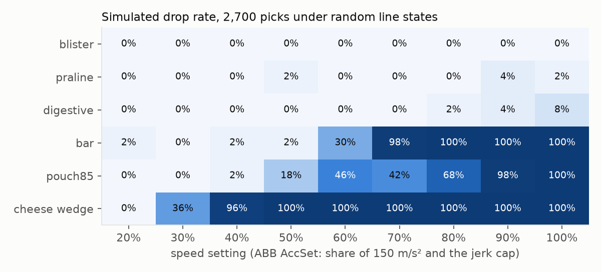

Where the product lands, too. Median placement error 1.18 mm. TabPFN's 90 % intervals cover 85 % of outcomes, against 77 % for boosted trees at the same width; a linear model needs 44 % wider intervals to cover 89 %.
A delta robot picks food products with a suction cup at up to 150 picks a minute. Too fast and the product flies off the cup. We let TabPFN read the line's own log, including the vacuum the cup measures at touch, and choose the speed of every single pick. No training, no tuning: each pick's outcome becomes a new row.
Packaging lines run every product at one fixed speed, set once by an engineer, so they waste speed on easy picks and still drop the hard ones. The data to do better is already on the line: weight, size, temperature, the cup's age, and the vacuum the cup reaches when it touches the product. We give that log to TabPFN as examples, and in the 35 ms the cup takes to seal it predicts the drop risk at all nine speeds, so the robot takes the fastest speed worth its risk. Each outcome is added as a new row, which is how it adapts during a shift to a heavier product, a bad film roll or a worn cup.
The cup holds the product with a fixed grip: vacuum times cup area. When the robot accelerates at 10–15 g, the product pulls against that grip, and a tall or off-centre product also tips and peels the cup off. Faster means more picks per minute but more drops; slower means fewer drops but lost output. The right speed changes with every product, and even with every item.
| The motion | ABB IRB 360 FlexPicker |
|---|---|
| Speed, acceleration | up to 10 m/s · ~150 m/s² (1 kg version) |
| Typical cycle | 0.36–0.44 s |
| Picks per robot | up to 120/min (Syntegon, vendor claim) |
High-speed motion "creates forces that impact the stability of the product in the gripper, as well as the potential for product damage".
"High-speed motions can cause failure of suction cups." They had to learn the failure limits from 420 physical trials with a sample object.
A delta robot stacking packages: an error otherwise "requires stopping the line for manual correction".
"Even fractions of a percent of failed picks" scale to significant cost at warehouse volumes.
High-speed food packaging lines lose most time to minor stops and changeovers.
10 stops/hour × 10 s ≈ 2.8 % of time ≈ 3,300 packs per 8-hour shift on a 250 packs/min line (illustrative).
Full research with all sources: docs/research/application-delta-picking.md.
An engineer picks one cautious speed per product at commissioning, and the line runs it all day. Vacuum sensors only say "held" or "lost" after the fact, and the smart vacuum monitors on modern grippers feed maintenance, not motion. The closest research (GOMP-ST) proves item-aware speed limits pay off, 16–58 % faster with no failures, but it needs dedicated physical trials for every object.
| Approach | What it does | What it leaves open |
|---|---|---|
| Fixed speed recipe per product | conservative settings chosen once, by experience | wastes speed on easy items, still fails on unusual ones, ignores drift during a shift |
| Vacuum switch per pick | confirms "item held" or "item lost" | reacts after the failure; never changes how the robot moves |
| Smart vacuum monitoring | Piab, Schmalz, Festo AX, SMC IO-Link: leaks, wear, evacuation-time drift | aimed at maintenance; but it means the data stream already exists on modern grippers |
| ABB PickMaster Twin | digital twin of the line; ABB claims changeover from hours to minutes, 15 % faster picking | models layout and flow; does not learn each product's grip from live picks |
| Research: GOMP-ST (Berkeley) | learns failure limits from vacuum readings, feeds them to a time-optimal planner: 16–58 % shorter transport, near 100 % success | dedicated trials with a sample object; no calibrated uncertainty; no update during production |
| This project | TabPFN predicts the drop risk of this pick at every speed from the line's own log, in the seal window | no trials, no training, calibrated risk, updates with every pick; simulation only so far |
Most AI models must be trained on your data before they can predict. TabPFN was trained once, by Prior Labs, on more than a hundred million made-up tables, to learn one skill: look at a table of examples and fill in the answers for new rows. You hand it your table and it answers in one pass, with a probability you can trust. Change the rows and you change the behaviour.
docs/HackLab_Berlin_x_TabPFN_Prior_Labs.pdf): "a pre-trained transformer that predicts on structured data in-context", trained once on "100M+ synthetic datasets"; at use, "one forward pass, no gradient step, no tuning". "Robots run on tables. Every sensor tick, joint reading and log line is a row."| The model we use | |
|---|---|
| Checkpoint | TabPFN-3.5-Fast (84M parameters; the full 3.5 has 220M), open weights, non-commercial licence; tabpfn 10.2.0 |
| Setting | classifier, 1 estimator, fit_mode="fit_with_cache": the context is encoded once, each query only runs the new rows |
| Context | the commissioning log, 2,700 picks: 13 sensor columns (mass; length, width, height; product and room temperature; humidity; cup cycles and diameter; vacuum setpoint; belt speed; seal kPa; evacuation ms) plus the speed setting → dropped yes/no |
| Query | the current pick as 9 rows, one per speed setting (20 %…100 %): one call returns P(drop) at every speed |
| Query engine | our JAX port of the cached query path (chapter 07): the same probabilities as PyTorch fp32, 2.35 ms per pick |
When the cup touches the product it waits 35 ms for the vacuum to build. The sensor's reading at the end of that wait tells us how good this seal is, before the robot moves. In that window TabPFN scores all nine speeds for this exact pick; the robot takes the fastest one that is worth its risk; and the outcome goes back into the table.
policy/policies.py value_rate).No real line was available, so we built one in MuJoCo from vendor data sheets: the vacuum generator and hoses, a soft suction cup, the closed-chain delta robot with ABB's limits, the belt and six products that drift during a shift. Every part was checked against an outside reference before we trusted it. Drops are not scripted: they happen when the physics says the grip loses.
| Gate | What | Checked against |
|---|---|---|
| 1 Pneumatics | vacuum generator, cup volume, lip leaks (ISO 6358 + slit flow), sensor | Piab evacuation tables (±3 %), SMC adsorption test, Schmalz forces |
| 2 Cup | compliant lip ring (Dex-Net 3.0 spring model), vacuum force, bellows | lift and shear limits within 4 % of theory; peel onset |
| 3 Seal and warning | seal vs surface roughness; what a near-miss looks like | Schmalz/SMC data; peel is abrupt, shear gives graded slip |
| 4 Delta robot | closed-chain IRB 360-class robot, exact feedforward, TOPP-RA time-optimal planner with ABB's foundation-load limits | ABB workspace, path accuracy, cycle times (held-out cycle −2.5 %) |
| 5 Line | belt, PickMaster-style tracking, vision error, 6-product catalogue with drift (cup wear, condensation, batches) | placement error vs ABB's table; drop onset vs Schmalz's sizing rule (S* = 1.94) |
Write-ups: docs/research/*-validation.md; tests: tests/ (gates 1–5); every estimated value is listed in DEBT.md.
TabPFN learns the drop risk from a few hundred logged picks, and its probabilities are honest. On a shift where a heavier product, a bad film roll and a worn cup all show up, it drops one bar where the fast fixed recipe drops 31, and it picks faster than the cautious recipe. It is not magic: a fixed speed chosen in hindsight would have done slightly better, and with a big dedicated test campaign a tuned recipe catches up.
Every pick was simulated at all 9 speeds, so each policy is replayed on identical items. From pick 30 a 60 g protein bar (+33 % mass, never in the log) arrives every third pick; picks 60–89 use a creased film roll (seal −12 kPa); picks 90–109 run an overdue cup (750k → 1.04M cycles); at 110 the cup is changed.
results/shift/decisions_jax.csv.| Segment | Fixed 50 % | Fixed 30 % | TabPFN |
|---|---|---|---|
| Picks 0–29, normal bars | 1 drop (pick 26) | 0 | 0 · mean 46 % |
| Heavy bars, 30–119 | 30 drops | 0 | 1 (pick 30) · then 20–30 % |
| Film roll, 60–89 | 10 drops | 0 | 0 · mean 31 % |
| Overdue cup, 90–109 | 7 drops | 0 | 0 · mean 39 % |
| New cup, 110–119 | 3 drops | 0 | 0 · mean 43 % |
| Whole shift | 31 drops · 122.7/min | 0 · 145.7/min | 1 · 152.6/min |
| Test: 940 unseen picks × 9 speeds | log-loss | calibration error | AUC |
|---|---|---|---|
| TabPFN, 250 logged picks | 0.159 | 2.5 % | 0.985 |
| logistic regression, 2,700 picks | 0.157 | 1.8 % | 0.985 |
| TabPFN, 2,700 picks | 0.124 | 1.1 % | 0.990 |
| boosted trees, 2,700 picks | 0.176 | 4.0 % | 0.987 |
Where the product lands, too. Median placement error 1.18 mm. TabPFN's 90 % intervals cover 85 % of outcomes, against 77 % for boosted trees at the same width; a linear model needs 44 % wider intervals to cover 89 %.

docs/research/evaluation.md.

146.6 good picks/min with 0 drops against 129.5 for the slow default (+13 %). Logistic regression and boosted trees reach the same speed but drop 5–6 % of picks. Not every new product gains: the cheese is already at its limit at the slowest setting.

With an abundant, dedicated test campaign (50 picks per speed and product), a recipe tuned on the true drop rates is as good as per-pick choice; no difference is significant. Most per-pick risk on this line comes from what no sensor sees (cup–product friction, vision error, a pouch's slosh). TabPFN still ranks items well inside a product's limit (AUC 0.81–0.84), but few items are safe enough to go one step faster. The value is in the small-log, changing-product, drifting-shift case, which is the normal case on a real line.
The decision must land inside the 35 ms the cup takes to seal. Standard TabPFN took about 30 ms per query on our laptop GPU, too close for comfort, and most of that was overhead (1,671 small GPU launches for 5.8 ms of real work). We rewrote the part that answers queries in JAX, which compiles the whole model into a few fused GPU programs. It gives the same probabilities as PyTorch and answers in 3.7 ms on a laptop and 2.35 ms on an H100 (exact fp32 mode, live in the shift).
clf.predict_proba. Medians over 200 calls. Sources: docs/research/tabpfn-jax-port.md, tabpfn-latency.md.| Independent verification | Result |
|---|---|
| JAX fp32 vs PyTorch fp32, 9 settings, fresh seeds | max |Δp| 1.8e-5 |
| Chosen speeds that differ (fp32) | 0 of 3,825 |
| Fast mode vs PyTorch fp32 | max 1.1e-2; 17 of 3,825 ties at the threshold |
| TabPFN's own default vs PyTorch fp32 | max 1.3e-1; 28 of 3,825 |
| 3,000-row speed map | 52.6 ms vs 80.8 (CUDA graph), 90.2 (PyTorch) |
| Weights accounted for | 307 tensors; query path reads 205 |
Code: jax_tabpfn/ (runtime.py, model.py, export.py, parity.py, bench.py). Prior Labs ships no JAX port; the only other one is the educational nanoTabPFN. Not ported: the context-side forward (refit stays in PyTorch, ~0.3 s), categorical encoding, ensembles. Only TabPFN-3.5-Fast is tested.
"Robots run on tables": any machine that logs what it sensed and what happened can hand that log to TabPFN. Our team took the idea to three more machines: a crane, a drone defence radar and a simulated fruit fly. Each project lives in its own folder of this repo with its own report.
TabPFN predicts where the swinging load will be 1 s ahead (5× closer than physics on a real lab crane) and chooses the anti-sway per load: 403 → 261 s on 12 new loads, against anti-sway set for the wrong sling. Left: industry anti-sway; right: TabPFN's choice. crane/
For a pilot no model has seen, TabPFN given the radar tracker's (IMM) estimate is 10 % more accurate than the IMM. Live, at 252 ms per answer, the gain shrinks to 4 %; on the alarm it's a tie. drone/
TabPFN flies a simulated fruit fly along an S-curve from 393k rows of a trained policy's flights, all 12 actions; −44 % error on a 20 % heavier fly after 16 example flights. A sudden 80° turn still beats it. fly/
| Project | What TabPFN does | Result |
|---|---|---|
| duckpfn (Microduck) | walks a simulated duck robot: one row per joint, 61 readings, 50 Hz closed loop | 57,344 context rows, 0 gradient steps |
| sEMG gestures | 8 hand gestures from a 24-channel armband, 215k windows from 40 people as context | 84.7 % on 4 new people (LDA 82.1, SVM 77.8) |
| Breakout | picks the 256 most similar teacher states as context for every frame | cleared all 108 bricks |
Source: Prior Labs' HackLab deck, pages 8–12. The track text also cites snakes that roam and bots that play badminton.
E-commerce and parcel picking, depalletizing, pharma blister handling: any cell with a vacuum sensor and a speed or acceleration override.
Piab, Schmalz, Festo and SMC already sell IO-Link vacuum sensing for maintenance; the same stream can choose the motion.
ABB PickMaster, FANUC, Yaskawa: per-pick speed on top of the existing digital twin, which handles layout and flow.
The sensors and the data already exist on modern lines, so this sells as a software add-on. A few percent more good picks on a line whose robot is the bottleneck is worth six figures a year per line. These are back-of-envelope figures from public summaries, not measurements.
| Delta robot market (report summaries) | Estimate |
|---|---|
| Global Industry Analysts | ~$2.2 B (2024) → $4.2 B (2030) |
| MarketIntelo | ~$2.1 B (2025) → $3.6 B (2030); pick-and-place 32.5 % |
| Next Move | 250k units (2023) → 641k (2030) |
| Food robotics (GM Insights) | $3.07 B (2025) → $13.16 B (2035) |
| Illustrative value per line assumptions | |
|---|---|
| Line | 250 packs/min, robot is the bottleneck, 2 shifts × 250 days |
| +5 % throughput, same rejects | ~6.0 M extra packs/year |
| At €0.02–0.05 margin per pack | ~€120k–300k per year per line |
| Our shift (simulated) | +4.7 % vs the cautious recipe, 30 fewer drops than the fast one |
Every number comes from a MuJoCo line validated part by part against vendor data, not from a real robot. Real drop rates are not published.
Next: a hardware cell, or a vendor's logged picks.
The first heavy bar is dropped because nothing like it is in the log. A cautious start for unknown SKUs (from the checkweigher) would avoid it.
A fixed 40 % for this shift gives 155.6/min vs 152.6. Nobody knows that speed in advance; TabPFN gets within 2 % of it without the future.
With 50 test picks per speed and product, a tuned recipe is as good. The gain is in small logs, new products and drift.
Friction, vision error and slosh are not in any sensor. Constant columns in the context are invisible to the model (e.g. humidity that never varied).
Cold compile 12–145 s on a new machine; context size is a static shape; only 3.5-Fast is ported; weights are non-commercial.
| Next step | Why |
|---|---|
| Real line data | an IO-Link vacuum log plus the robot's speed override and a pick-outcome camera is enough to replay this method offline |
| Cautious start for unknown SKUs | treat a pick whose checkweigher mass is outside the logged range as a new product and start it slow, as the new-product runs do, so the first heavy bar is not dropped |
| Context retrieval per product | select the most similar logged picks per query, as Breakout did, instead of one rolling window |
| Port the context side to JAX | refit stays in PyTorch (~0.3 s); a JAX context path would make the whole loop one program |
| Act on more than speed | vacuum setpoint, release height and pick offset are already candidate columns |